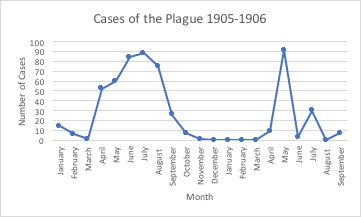

Plague in Egypt 1905-1906
Microhistory allows you to look at a small part of history and taking the information you find and applying it to a larger scale. With the Egyptian Gazette I was able to do just that. By examining a small part of history between the years 1905 and 1906, I was able to learn about things not only occurring in Egypt, but how these same things applied to the whole world. For my analysis project I wanted to uncover more information about a small topic frequently covered in the newspaper. I chose to center my analysis and serial question on the plague that was affecting various cities in Egypt in 1905 and 1906. I wanted to learn more about the plague, find which cities and locations were most affected by it, and I wanted to uncover any trends that would reveal if the plague was spreading or decreasing during this time.
I initially became interested in this topic when I was working with my week in the newspaper. As I was working through my third page of my newspaper, I noticed a small article about a plague affecting multiple cities in Egypt. The article was very vague as to what the plague was or anything about it. The article reported quite a few new cases, deaths, and a cure. I was immediately intrigued to find out more about this plague. I began to think of how I could turn this into a serial question. The main focal point of my research would be how the plague affected Egypt over time. I wanted to search through the entire newspaper to find out if the presence of the plague increased or decreased between 1905 and 1906. I wanted to build upon data collected by students in the previous semester that conducted their analysis on the same topic. To do so, I also included data from 1906 to see how the trends continued. Through my query, I hoped to find more information about what exactly the plague was, where it came from, how it spread, and which places were most affective. The article in my newspaper did not give me much information so I wanted to search the entire newspaper to find out more.
To develop my XPath query, I began experimenting with different XPaths to see how I could get back the most results regarding the plague. Since I found the article of the plague in my newspaper on page three, I began by searching through all of the page threes in the newspaper. After working more with oXygen, I realized that the most data returns came when I did a search on the entire newspaper and searched for any occurrence of the word “plague” in any article. I kept the query general by just choosing the word plague because the XPath query is case sensitive and I noticed while going through the articles, the word “bubonic” was misspelled on multiple occasions. If I were to make an xpath query that searched for the word “bubonic,” I would miss data. I also chose to search through every page of the newspaper rather than on a specific page because I noticed that in some of the issues, articles about the plague could be found on different pages.For the majority of the time, this was documented on page three but occasionally these articles could be found on page four. I also chose to solely search the word “plague” because the XPath is case sensitive and some people have not edited their issues yet and by doing this I eliminate missing information due to misspellings and errors. By searching the XPath query I created, I was able to find one hundred and eighty-seven results regarding new cases of the plague, deaths, treatments, and general information about the plague.
The process I used to collect data was slightly time consuming. To collect the data, I had to go through each result individually. I recorded all of the new cases that were documented as well as the date of the issue it was published in and the city where the new case was reported. I collected all of the data and put it into an excel spreadsheet. With this data, I created graphs to show the number of cases, by month, for 1905 and 1906. There was a trend that can be seen. Looking at the graph it can be seen that the plague peaked in the middle of the year 1905, around June and July, then began to decrease. The number of cases due to the plague began to increase again around the beginning of the year 1906, around April. I also used the data I collected to determine which cities in Egypt were most affected by the plague. The cities that were most frequently reported on were, in order from greatest to least, Alexandria (133 cases), Deshna (40 cases), Hehia (39 cases), Damanhour (34 cases), and Samalout (30 cases).
One problem I faced during my data collection was missing data. Not all of my classmates have finished updating their newspaper issues. This created problems because I am missing data that would contribute to my analysis. I am missing articles from many dates in the newspaper. This means that either some students have not done OCR to all of their pages or they have not edited their text so when I perform the XPath query, the articles about the plague will not show up if the word plague is misspelled. I also noticed that I had much more data for the year 1905 than I did for 1906. I did however have enough data from both years to show a trend and form conclusions, but the data could be more accurate.

With errors aside, a trend can be seen in the data. First looking at the line graph that shows the number of documented cases over 1905 and 1906, the number of cases sharply increases, slowly increases, peaks, decreases, then sharply decreases. There is little to no data from November 1905 to March 1906. The number of cases then sharply increases in May of 1906 and then sharply declines in June 1906. There are a couple other spikes in the remaining months of the year. Though some of the data is missing, the trend is still accurate with that is happening during this time. In the newspaper, it was reported that the number of cases from the plague were decreasing at the end of 1905.
Sanitation practices also increased as the number of cases were increasing in 1905. Furthermore, some articles reported on quarantine and treatment. An article at the end of 1905 reported that the plague was lessening and was no longer evident in some cities. The number of cases were decreasing until there was another outbreak in the beginning of 1906. This trend is supported by the graph. The plague was worsening in 1905 and the Sanitary Department were taking extra procedures to prevent it from spreading. This article goes into depth about sanitation practices. It gives data about how many houses were disinfected, people isolated, etc.
An additional portion to my research was learning more about the plague that affected people in Egypt during this time. I wanted to know what this plague was and how it spread. I had to do some outside research to find more information. This website gave me a detailed analysis of plague that spread through Egypt. The bubonic plague was spread by infected fleas that would bite humans. This plague was also present before the time period I searched. In the newspaper as well as my secondary research, I found that the plague existed for a time before 1905 and 1906. In the newspaper, various articles would report how many new documents were recorded for a day and then compare it to how many cases were reported in the past year. From the articles, I can conclude that the number of new cases decreased in 1905 and 906 when compared to 1904. For example, on September 4, 1906, the article reported that in since January 1, 1906, 438 total cases were reported. Comparatively, in 1905 there were 216 total cases and 786 in 1904.
Digital methods in microhistory has its strengths and weaknesses. It is a very beneficial tool in many ways. Through digital methods, we are able to take an ancient newspaper and turn it into something that can be analyzed and easily searched through. With digital technology, I was able to create a question I wanted answered and search through the entire newspaper for information with a few key strokes. It is astonishing what technology can do and how beneficial it is when creating and searching for information. The only major downfall of this is that I rely on my classmates to finish inputing all of their issues electronically before I can search through and retrieve accurate data. All in all, digital methods have made it exceptionally easy to quickly search through the Egyptian Gazette and find information quickly.
Marsella Migdalski
Student
The author, a student at Florida State University, was enrolled in the digital microhistory lab in spring 2017.